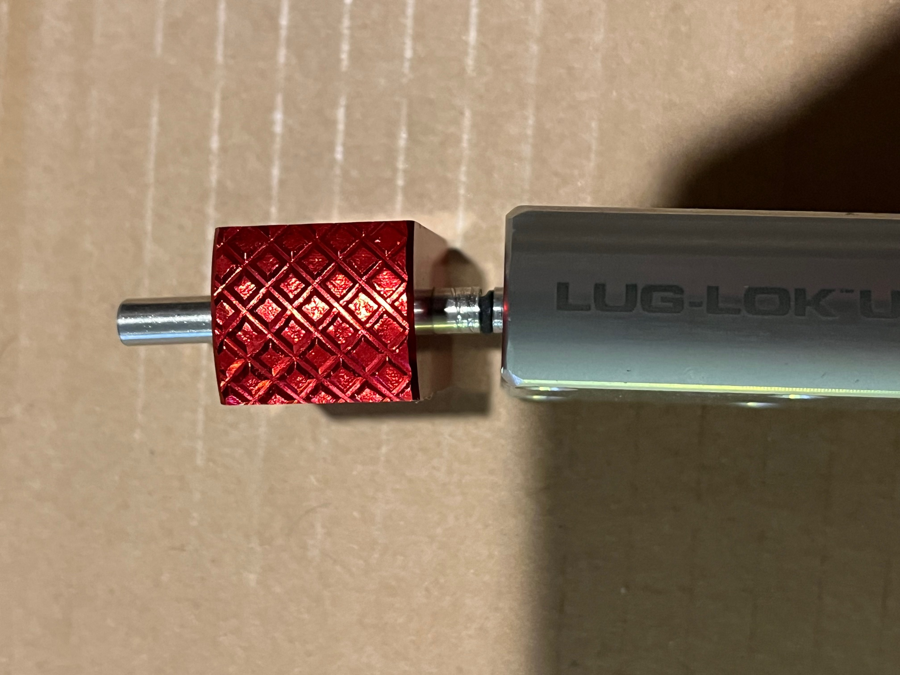

Memorial Gallery
Celebrating the cherished companions who have touched our lives.

Whiskers - The Eternal Guardian

Buddy - Service Record

Midnight - Memorial Bundle

Shadow - Digital Memorial

Luna - Legacy Portrait

Max - Dossier